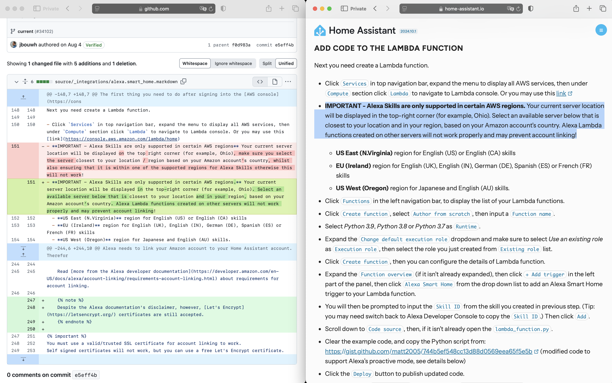

TLDR: I created the GitHub repo contract-versions to show the importance of version control and diffs to non-developers.
Sometimes finding the right example helps a lot. Even more so when it is visible. It makes things clear and people get it.
More than once I find myself explaining the importance of version control and diffs to non-developers. The concepts are important not only for programming code but to many more areas such as datasets and machine learning models. More than once, unfortunately, business folks struggle to understand its value.
An explanation can fail big time when one opens the terminal and starts to run git commands. It seems last week I found a better way. I had a relative trying to understand the concept and I remembered that earlier he had complained about Microsoft updating its terms and that it was so much to read.

So I created a repo on Github to compare the two versions of Microsoft’s Service Agreements. I showed my relative the visual diff of those two versions and had him scroll through the coloured changes. This was what made him understand and appreciate diffs. More so as he had desperately been trying to pinpoint those changes in the docs manually! I then showed him a commit in the documentation of Home Assistant and where it is in the documentation. I think he now understands much better how version control and diffs are used when developing software.

Sometimes it is super helpful to have concrete, relatable and visual examples!